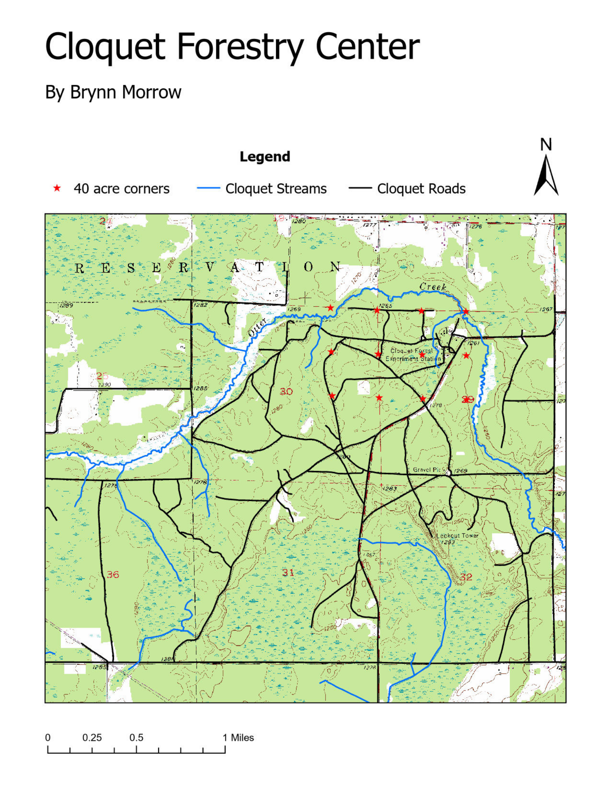
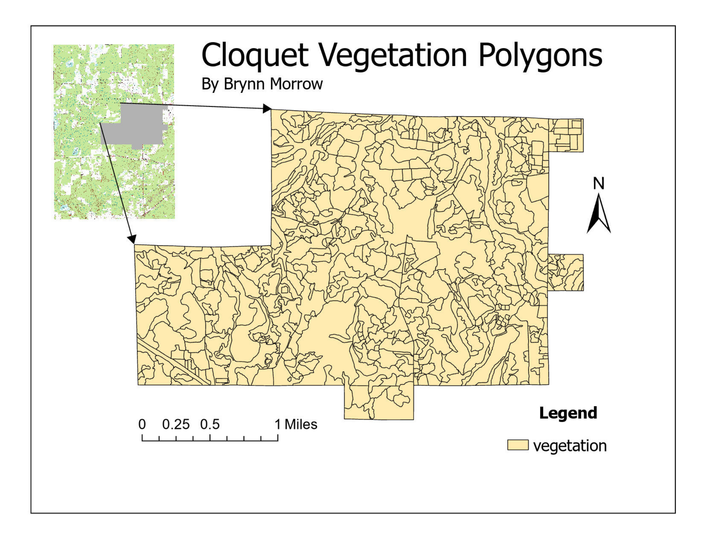
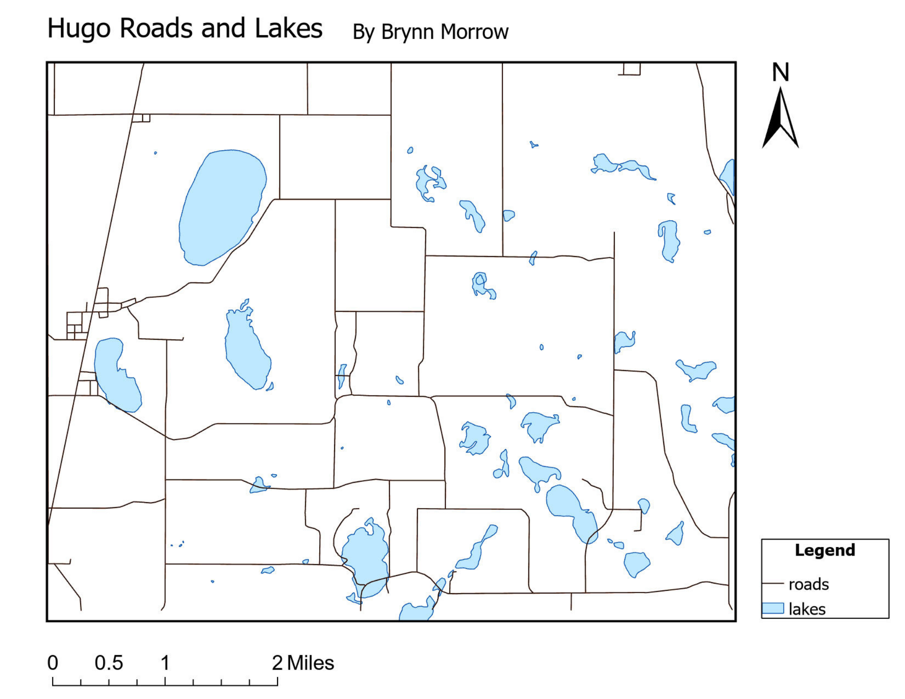
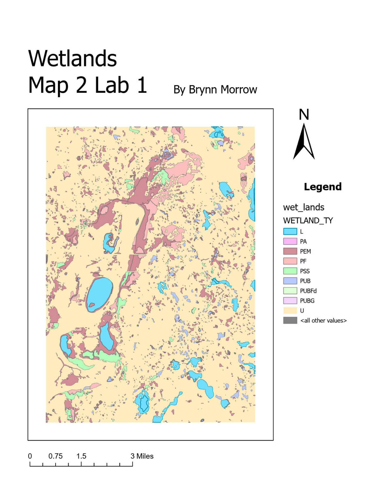

Cartographic Design & Spatial Data Management
GIS Analysis | Sept 2025

Figure 1: Cloquet forestry center map showing streams, roads, and other features.

Figure 2: Cloquet vegetation polygons map

Figure 3: Map of roads and lakes in Minnesota county, Hugo.

Figure 4: Wetlands map with additional features.
Technical Implementation
- Created multiple maps in ArcGIS Pro, integrating vector and raster datasets, customizing symbology, and composing professional layouts with legends, scale bars, north arrows, and descriptive titles.
- Performed spatial measurement and analysis tasks, including distance and area calculations, layer organization, coordinate system management, and map configuration for multiple views
- Managed spatial data storage by importing shapefiles in file geodatabases, created feature datasets and classes, organized projects for scalable, reusable spatial workflows.
Skills Utilized
ArcGIS Pro
GIS
Cartography
Spatial Data Management
Visualization
Need to see the fine details?
Download High-Resolution PDF Layout